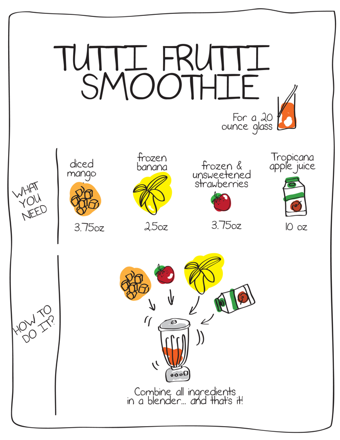

Technology
Intermediate Microeconomics (Econ 100A)
Kristian López Vargas
UCSC - Spring 2017
Production
-
Production transforms a set of inputs into a set of outputs
-
Inputs / factors of production:
- labor, land, raw materials, capital
- Measured in flows
-
Output:
- The amount of goods and services produces by the firm is the firm’s output.
- In flow too
Technology
-
What is technology?
- Knowledge
- ...determines the quantity of output that is feasible to attain for a given set of inputs.
-
What is a "technological constraint"?
- Is what separates what is feasible given our current knowledge and what is not.
Technological constraints
-
Production set: all combinations of inputs and outputs that are technically feasible.
-
Production function: upper boundary of production set.
- The production function tells us the maximum possible output that can be attained by the firm for any given (combination) of inputs.
-
Examples (input, output):
- (9 hrs of studying per week, final grade of 35) in PS but not efficient (below PF).
- (9 hrs of studying per week, final grade of 94) not in PS (i.e. not feasible).
- (9 hrs of studying per week, final grade of 93) in PS and on PF (feasible and efficient).
Production Functions, Sets
Example - smoothie recipe

Production Functions, Notation, Examples
-
q = f(L, K)
- q = output (note that book uses $ y $ for output)
- K = Capital
- L = Labor
-
Examples:
- $ q = f(L, K) = L + K $
- $ q = f(L, K) = L \times K^2 $
- $ q = f(L) = L^{0.5} $
- $ q = f(L, K) = min \{ L , K/0.5 \} $
-
Remember: every input and output is expressed in units per unit of time.
Isoquants
-
Isoquants: represent all the combinations of inputs that produce a constant level of output.
-
Isoquants are like indifference curves for preferences, except "isoquants" describe technology not preferences.
-
Isoquants "live" in the space (plane) of factor of production or inputs.
Examples of isoquants
-
Fixed proportions, complements — one man, one shovel: $ q = \textrm{min} \{ man, shovel\} $
-
Perfect substitutes — pen, pencils: $ q = pen + pencils $
-
Cobb Douglass: $ q = A L^a K^b $
-
Warning: a monotonic transformation of f(K,L) does not give the same technology!
-
Exercise: what type of tech is a cooking recipe?
Assumptions - well-behaved technologies
-
Monotonic — more inputs produce more output
-
Convexity — averages produce more than extremes
3-D version of a C-D production function

Marginal Product
-
$ MP_L $ is how much extra output you get from increasing the usage of labor holding K constant.
-
$ MP_L = \frac{ ∂f(L,K) }{∂L} $
-
Similarly: $ MP_K = \frac{ ∂f(L,K) }{ ∂K } $
-
Examples:
- $ q = f(L, K) = L + K $
- $ q = f(L, K) = L \times K^2 $
- $ q = f(L) = L^{0.5} $
- $ q = f(L, K) = min \{ L , K/2 \} $
Average product $ {AP}_L $
-
$ AP_L $ is the per-worker output: $ AP_L = \frac{ f(L,K) }{ L} $
-
$ AP_K $ is the per machine output: $ AP_K = \frac{ f(L,K) }{ K } $
-
Examples:
- $ q = f(L, K) = L + K $
- $ q = f(L, K) = L \times K^2 $
- $ q = f(L) = L^{0.5} $
- $ q = f(L, K) = min \{ L , K/2 \} $
APL and MPL
-
If $ MP_L > AP_L $ , can it be that $ AP_L $ is decreasing? Nope
-
If $ MP_L < AP_L $ , can it be that $ AP_L $ is increasing? Nope
-
If $ MP_L $ and $ AP_L $ cross, where/how do they cross?
Technical rate of substitution TRS
-
Similar to MRS
-
Technical rate of substitution (TRS): Suppose you increase $ L $ by $ \Delta L $. How much can you reduce K ( $ - \Delta K $ ) such that production level is not altered?
-
Mathematically, TSR is the derivative of K with respect to L, along one isoquant curve: $ TRS = \frac{ dK }{ dL } = - \frac{ MP_L }{ MP_K } $
-
Examples: do Cobb-Douglas and linear production.
Diminishing marginal product / returns
-
Diminishing marginal returns: More of a single input produces more output, but at a decreasing rate:
- Example: $ q = f(L, K) = L^{0.5} K^2 $
-
Diminishing TRS equivalent to convexity.
-
(!) There is a difference between diminishing returns (MPs) and diminishing TRS (!)
-
Example: $ q = L \times K $
-
$ MP_L $ is not diminishing but $ TRS $ is decreasing.
-
Isoquants and Returns to Scale

Returns to scale
-
Is this scalable?
- Often, firms need to grow! Can I just multiply the amount of inputs?
- That depends largely on the firms’ technology.
-
What happen to my output if I double ALL my inputs?
- Doubling inputs: $ f(2L, 2K) $ what is the resulting $ q $ ?
- Similarly $ f(3L, 3K) $ ?
- Similarly $ f(1.1L, 1.1K) $ ?
Returns to scale - definition
Production function exhibits:
-
Constant returns to scale (CRS): when a percentage increase in inputs is followed by the same percentage increase in output.
- Example: doubling inputs doubles output: $ f(2L, 2K) = 2f(L, K) $
-
Increasing returns to scale (IRS): when a percentage increase in inputs is followed by a larger percentage increase in output.
- Example: $ f(2L, 2K) > 2f(L, K) $
-
Decreasing returns to scale (DRS): when a percentage increase in inputs is followed by a smaller percentage increase in output.
- Example: $ f(2L, 2K) < 2f(L, K) $
Returns to scale - intuition
Some technologies allow for proportional scaling up of your production operation. Some other technologies do not. Why?
-
CRS: Easy replication (e.g. flyer distribution, data centers. Think of other examples)
-
IRS: Occurs often with greater specialization of L and K (e.g. a larger plant more productive than two small plants).
-
DRS: Occurs often because of the difficulty in organizing/coordinating/searching activities as firm size increases (e.g. mining).
Returns to scale - the math
For $ t>1 $, the production function $ f(L,K) $ exhibits CRS/IRS/DRS when:
-
CRS: $ f(tL,tK) = t f(L,K) $
-
IRS: $ f(tL,tK) > t f(L,K) $
-
DRS: $ f(tL,tK) < t f(L,K) $
Returns to scale - examples
- $ q = f(L, K) = L + K $
- $ q = f(L, K) = L \times K^2 $
- $ q = f(L) = L^{0.5} $
- $ q = f(L, K) = min \{ L , K/2 \} $
Returns to scale - graphics
Returns to scale - local notion
-
"Returns to scale" are a local notion!
-
Some prod functions have "global" returns to scale (e.g. $ q = L K $ ), but not all.
-
Example: $ q = f(L,K) = (L+K) + (K+L)^2 - 0.1 (K+L)^3 $
- Start at $ (L, K) = (0.5 , 0.5) $
- Try scaling inputs up by $ t=2 $
- Try scaling inputs up by $ t=10 $
- try set t=2 and then t=10 in this desmos example
Long run and short run of the firm
-
If all factors can be adjusted, the firm is in the "long run"
-
If at least one factor cannot be adjusted, the firm is in the "short run"
-
That is, we are in the short run (SR) when some factor(s) must stay fixed.
-
Typically, we hold $ K $ constant at level $ \bar{K} $ in the SR.
-
So the typical production function in the short run is written as:
-
$$ q = f(L, \bar{K} ) $$
Explore more graphics to understand better
http://www2.hawaii.edu/~fuleky/anatomy/anatomy.html